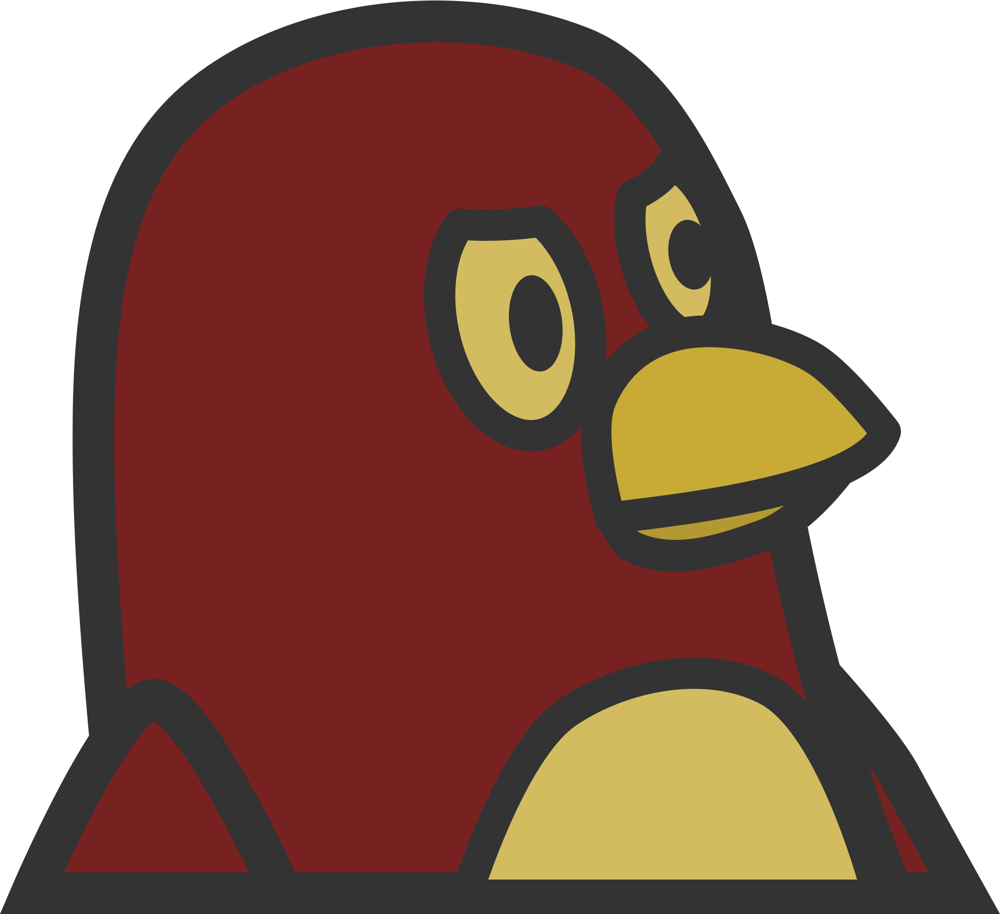

SOVIET ★ LINUX<
The source based distribution for the people

SOVIET-CURRENT.ISO
ABOUT
Soviet Linux is a source based distribution.
It does _lots_ of things:
turns on
turns off
logs in
logs out
fully keyboard capable
displays hammer & sickle graphic